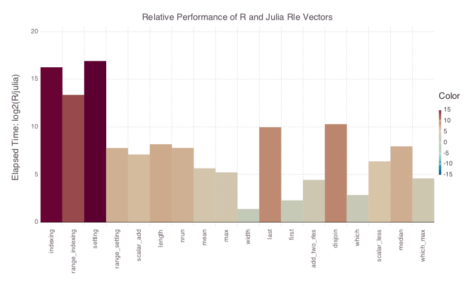
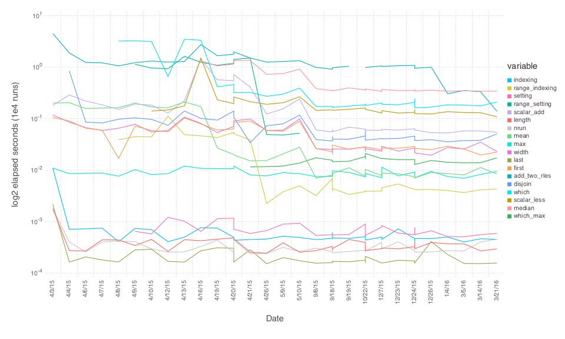

RLEVectors
RLEVectors is an alternate implementation of the Rle type from Bioconductor's IRanges package by H. Pages, P. Aboyoun and M. Lawrence. RLEVectors represent a vector with repeated values as the ordered set of values and repeat extents. In the field of genomics, data of various types are measured across the ~3 billion letters in the human genome can often be represented in a few thousand runs. It is useful to know the bounds of genome regions covered by these runs, the values associated with these runs, and to be able to perform various mathematical operations as if the vector were uncompressed.
Background
Bioconductor has some widely used and extremely convenient types for working with collections of ranges, which sometimes are with associated data.IRanges represents a collection of arbitrary start, end pairs in [1,Inf). GRanges uses IRanges to represent locations on a genome and adds annotation of the chromosome and strand for each range. Children of GRanges add other annotations the the ranges. Rle represents the range [1:n] broken into arbitrary chunks or segments.
Implementation Details
RLEVectors differs from R's Rle in that we store the run values and run ends rather than the run values and run lengths. The run ends are convenient in that they allow for indexing into the vector by binary search (scalar indexing is O(log(n)) rather than O(n) ). Additionally, length is O(1) rather than O(n) (it's the last run end rather than the sum of the run lengths). On the other hand, various operations do require the run lengths, which have to be calculated. See the benchmark directory and reports to see how this plays out.
Creation
RLEVectors can be created from a single vector or a vector of values and a vector of run ends. In either case runs of values or zero length runs will be compressed out. RLEVectors can be expanded to a full vector like a Range with collect.
using RLEVectors
x = RLEVector([1,1,2,2,3,3,4,4,4])
collect(x)
y = RLEVector([4,5,6],[3,6,9])
collect(y)Describing
RLEVectors implement the usual descriptive functions for an array as well as some that are specific to the type.
length(x)The full length of the vector, uncompressedsize(x)Same aslength, as for any other vectorsize(x,dim)Returns(length(x),1) for dim == 1starts(x)The index of the beginning of each runwidths(x)The width of each runends(x)The index of the end of each runvalues(x)The data value for each runisempty(x)Returns boolean, as for any other vectornrun(x)Returns the number of runs represented in the arrayeltype(x)Returns the element type of the runsendtype(x)Returns the element type of the run ends
Standard vector operations
RLEVectors can be treated as standard Vectors for arithmetic and collection operations. In many cases these operations are more efficient than operations on a standard vector.
x = RLEVector([4,5,6],[3,6,9])x[2]x[7:9] = 10push!(x,6)x + 2xunique(x)findin(x,5)x > 4.2sort(x)median(x)
split and tapply -like operations
An RLEVector can be used like R's factor type to apply a function over (contiguous) sections of another vector. For example, here we break a vector into 5 groups and take the average of each group. In the second example, we also scale each mean by the RLE run value corresponding to each group.
factor = repeat( ["a","b","c","d","e"], inner=20 )
rle = RLEVector( factor )
x = collect(1:100)
group_means = Float64[ mean(x[r]) for (v,r) in each(rle) ]This is much like the tapply operation in R. A convenience wrapper with this name is provided. The second, factor, argument can be an RLEVector or a Vector to be converted to an RLEVector. This vector need not be sorted.
tapply( x, factor, mean )
tapply( x, rle, mean )In addition to the Range for each RLE run, the each iterator provides the corresponding run value. These values can be used in calculations on each vector block.
x = collect(1:100)
rle2 = RLEVector( repeat( [1,2,3,4,5], inner=20 ) )
scaled_group_means = Float64[ v * mean(x[r]) for (v,r) in each(rle2) ]Relative speed
RLEVectors has been extensively profiled and somewhat optimized. Please see the benchmarking section for the evolution over time and comparisons to like operations in R.
Benchmarks
** Please note that these benchmarks include data structure / algorithmic differences as well as language differences ** For example, indexing is O( log(n) ) in RLEVectors.jl and O(n) in the original R implementation. Similarly, last is a simple lookup in RLEVectors.jl where width is a lookup in the R version. Other functions listed here of the same computational order, but not necessarily direct translations. RLEVectors.jl is written in my interpretation of idiomatic julia.

Optimization progress

Memory considerations
Data compression is a secondary benefit of RLEVectors, but it can be convenient. Generally run ends are stored as Int64. However, if further memory savings are desired, consider smaller and unsigned types. UInt32 is sufficient to hold the length of the human genome and UInt16 can hold the length of the longest human chromosome.
RLEVector([5.1,2.9,100.7], UInt16[4,8,22])